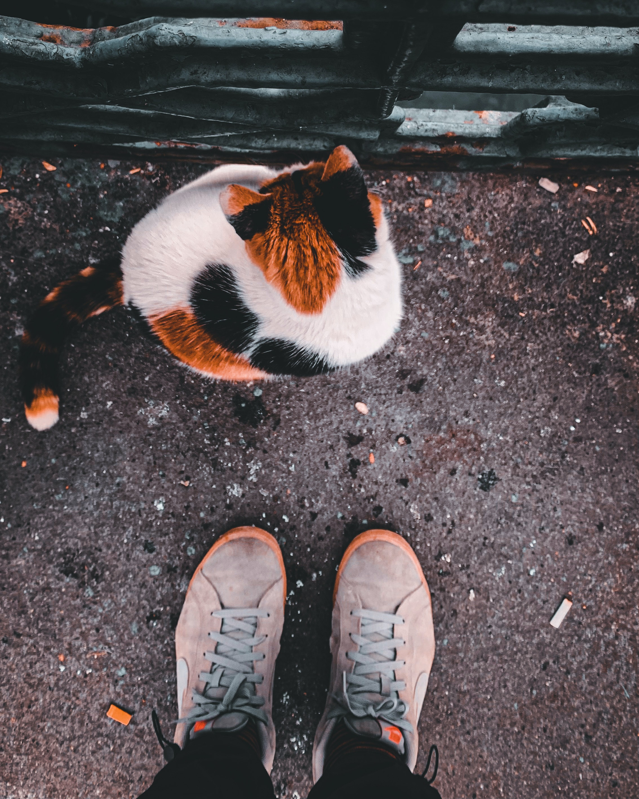
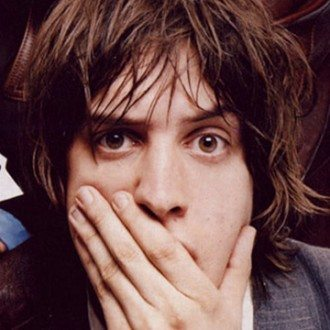
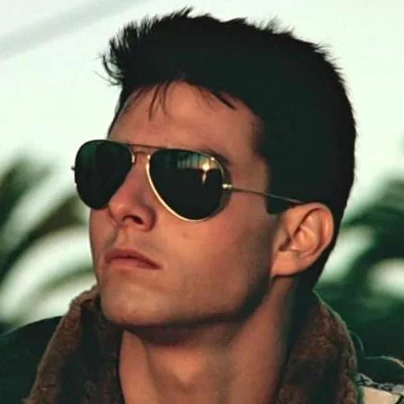

La superioridad tricolor!
En esta página voy a darte los motivos de porque los gatos tricolor son la raza suprema, y porque todo el mundo debería tener uno. Conocerás sus rasgos más característicos y hasta vas a poder adoptarlos, y postearlo en nuestro muro de imagenes!


Testimonios

Julian Casablancas
Sin los gatos tricolor The Strokes no sería lo que es hoy en día.
Bill Gates
Los gatos tricolor fueron mi inspiracion para crear Windows y cambiar el mundo como lo conocemos.

Tom Cruise
Aunque no se vea a simple vista, Top Gun toma gran inspiracion en los michis tricolor.